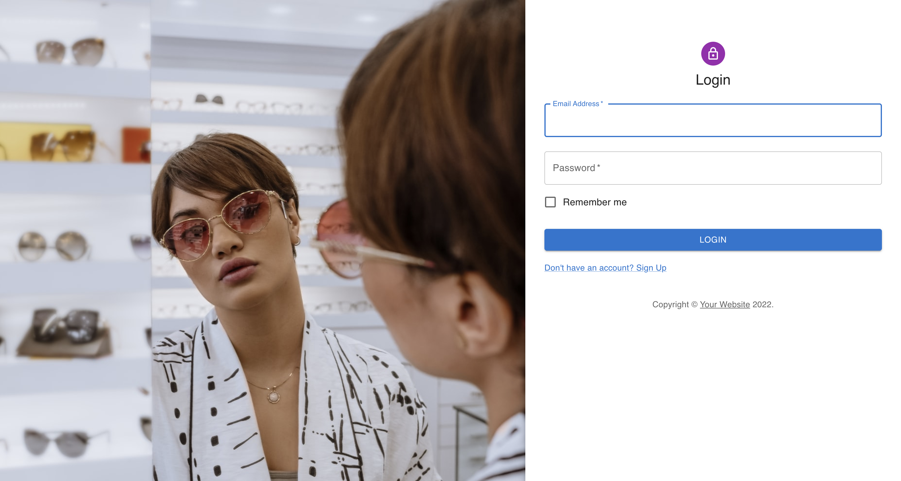
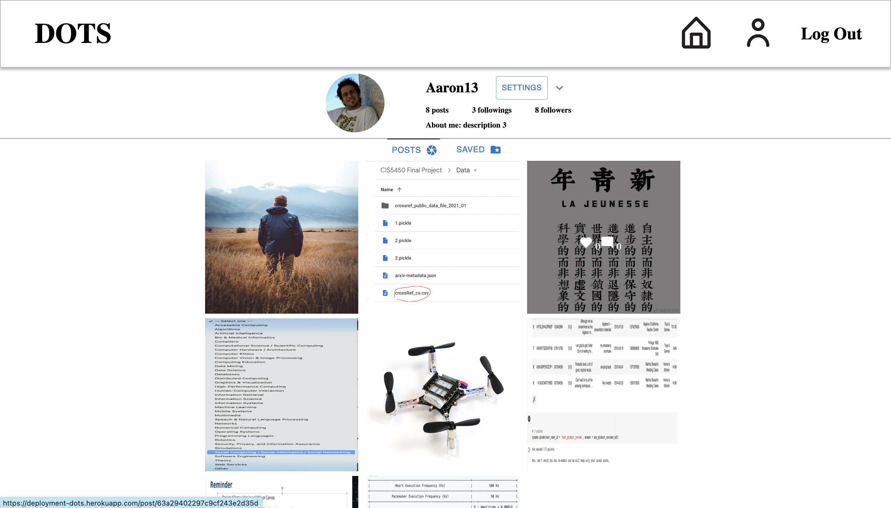
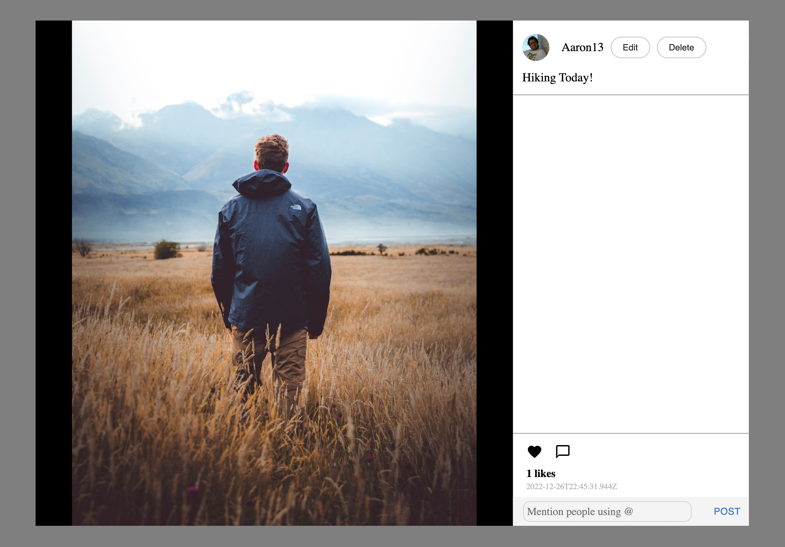
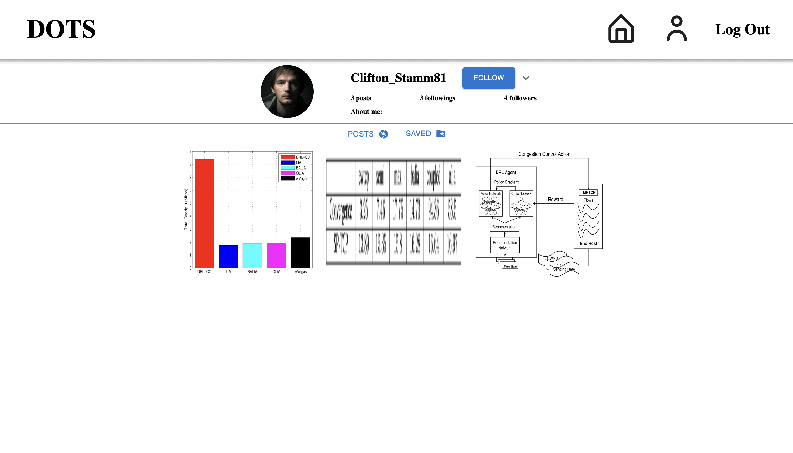

DOTS

DOTS is a social media web app for users to share images/videos. Users are able to register for their accounts, follow other users, view feed of posts, manage their profile page, and search for other users by username.
This project was completed by a team of 3. Development of this app follows agile project management principles and finally we deployed this app to Heroku. Tech used includes Javascript, Node.js, React.js, Express.js, and MongoDB. We test our app regularly before we push any changes. We use Jest to test UI, superTest to test backend, and Cypress for end-to-end testings. Design of our app follows MVC architecture. During the design phase, we used Figma to design the UI frames and we designed our Data schema and REST APIs in SwaggerHub.
Features
- User Login and Registration
- Token-based authentication
- Sharing posts with privacy options
- Infinite scroll and live updated feed
- Search users and Following suggestions (more than 3 common followings)
- User profile page and a gallary of posts
- Edit/Delete your own posts, and like/comment/mentioning others posts
User Login
Token-based authentication (JWT), User lockout after 3 trials of password.
Home Page
Live updated feed using Server pulling every 5s. Following suggestions show users who have at least 3 common followings. Feed supports Infinite scroll.
User Profile Page
User can view details of posts and like/comment on them. Post owners can edit/delete their posts.
 Following Other Users
Users can view other users profile pages and follow/unfollow them. After following a user, their posts will show up in your feed.
